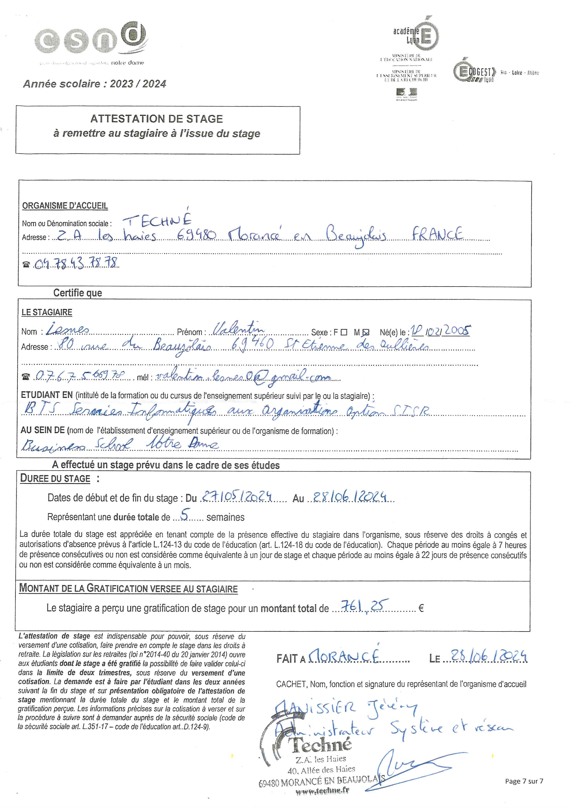

Accueil
Le BTS SIO
Parcours de professionnalisation
Projets Scolaires
Parcours Professionnel
Portefeuille de Compétence
Veille Technologique
Patrimoine Informatique
Contact
Portefeuille de Compétences
Vous retrouverez ci-joint toutes les compétences assimilées lors de mes deux années de BTS SIO au sein de mon centre de formatione et en immersion professionnelle.

Ouvrir le PDF
Portefeuille de Compétences